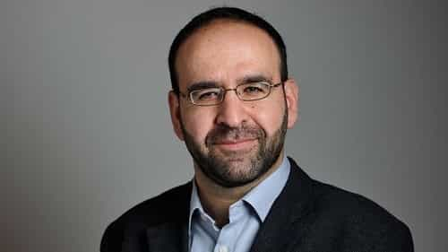

< < < Back
Feminists Have No Idea What’s In Store When Muslim Values Become Accepted – Return Of Kings
The Swedish government has been through a tough week. One of the two ruling parties, the Green Party, has had two of their representatives resign after scandals related to their Muslim identity.
Now people are asking the question: is there a place for practicing Muslims in Swedish politics? The fact that this question has to be asked shows how badly multiculturalism actually works in practice.
Minister resigns after meeting with Islamists

Mehmet Kaplan, Minister for Housing and Urban Development, was exposed a week ago for having connections to extremist organizations. Photographs show him eating dinner with people from the Turkish ultra-nationalist group the Grey Wolves. He also met with representatives of the Islamist organization Millî Görüş. Televsision footage recorded in 2009, five years before he became minister, shows him comparing Israel’s actions against Palestinians to Nazi Germany’s treatment of Jews. Mehmet Kaplan finally threw in the towel on Monday.
Yasri Khan, candidate for the Green Party board, was next to resign. When meeting a female reporter for an interview about the Kaplan scandal, he refused to shake her hand. When greeting a woman, he instead puts his hand on his heart. Khan explained that he was raised to think that “physical contact with the other sex is considered to be very intimate.” After much criticism from both inside and outside his own feminist party, he decided to leave all of his political posts on Wednesday.
Interestingly, the organization which Yasri Khan is the chairman of, Swedish Muslims for Peace and Justice, was founded by Mehmet Kaplan. Khan has said that he sees Kaplan as a “great role model.”
On Thursday, Prime Minister Stefan Löfven commented on the recent events in the parliament. “The government has no involvement with extremists,” he said, and added: “It goes without saying that you should shake hands with both men and women.”
This sends a message to Muslims
Yasri Khan demonstrating how he greets women.
As you can imagine, there have been a number of allegations of Islamophobia coming from SJWs. They are easy to predict in that way. If something bad happens to a Muslim, you can be sure that they’ll blame anyone but the Muslim himself. But that’s not what’s interesting about what happened this week. Only the most extreme leftists have spoken out in defense of Kaplan and Khan. The rest, including the mainstream media, have been pretty much unified in their condemnation of the two former politicians.
What this shows is that it’s really not possible to be an orthodox Muslim and politician at the same time in Sweden. There appears to be an unwritten code of conduct that must apply to everyone, and it includes treating men and women equally. Like the Prime Minister said, you have to be able to shake a woman’s hand. If you’ve been raised like Yasri Khan and many other Muslims like him, you have to change your behavior or stay out of politics.
It is widely recognized that the Green Party is the most liberal party when it comes to immigration, and it’s also a great proponent of multiculturalism. Its top leaders proclaimed in 2014 that they “will never make it more difficult for people to come to Sweden.” Yet this is the party that now kicked out two of its Muslim representatives, for reasons that had everything to do with their immigrant and Muslim identity. I can’t come to any other conclusion than that no one actually wants multiculturalism for real—not even the most idealistic of leftists.
Feminists and Islamists don’t play well together
Common sense will tell you that feminism and Islamism are impossible to combine. While modern feminism is basically a women’s supremacy movement, women in Islamic societies are subjugated and under the supervision of their male relatives. Feminists have refused to admit that there are great issues with Islam related to the role women, instead vehemently castigating white men as sexists and misogynists. Now it looks like reality is catching up to them.
Leftists do one thing great, and that’s selling their ideological product to the masses. They’ve made almost everyone think that multiculturalism is a great idea, and that anyone who opposes it must be a racist. But when tried in practice, even they seem to realize that it’s a terrible idea. There’s nothing wrong with Islam—it’s the religion of peace, they say. Then they encounter an actual practicing Muslim and suddenly become very nationalistic and conservative. Their message is as contradictory as it is destructive: “Come to Sweden! Be a Muslim, by all means. All we ask is that you to think and act the way us progressive Swedes do. We know you secretly want to be like us.”
I see things changing for the better. It’s become more accepted to be skeptical of immigration and multiculturalism in the last few months. The left seems a little bit less hellbent on destroying Western civilization than before. Whatever opinion one has of Islam and immigration, it’s a good thing that people can talk about it all more openly and ask the serious questions.
Now people are asking: Can an orthodox Muslim be a politician in Sweden? All I know is that the answer is not as certain as it used to be.
 If you like this article and are concerned about the future of the Western world, check out Roosh's book Free Speech Isn't Free. It gives an inside look to how the globalist establishment is attempting to marginalize masculine men with a leftist agenda that promotes censorship, feminism, and sterility. It also shares key knowledge and tools that you can use to defend yourself against social justice attacks. Click here to learn more about the book. Your support will help maintain our operation.
If you like this article and are concerned about the future of the Western world, check out Roosh's book Free Speech Isn't Free. It gives an inside look to how the globalist establishment is attempting to marginalize masculine men with a leftist agenda that promotes censorship, feminism, and sterility. It also shares key knowledge and tools that you can use to defend yourself against social justice attacks. Click here to learn more about the book. Your support will help maintain our operation.
Read More: 3 Things That Worry Leftists More Than Global Jihad